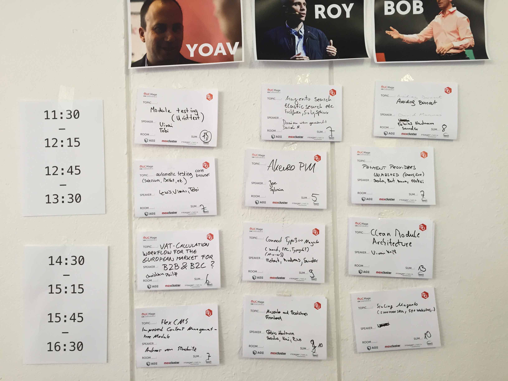

#mageuc15
The first Magento Unconference is over. If we are to believe the replies, it was successful … Because of that, we decided to do it again. So in the near future you will find more information about the #mageUC16 at this place. This year it has been our first time – and we learned a lot about planning and we hope it will be still better next time. This year it took place in Berlin, in a idyllic location. More or less 90 „Magentos“ have been there and helped to realise that the spirit of an Unconference become alive. Thanks for being there. See you next year!
So we define our target group as: magento enthusiasts
It's over now!
If you weren't there you missed out on something good! If you were there, you may revel in the memories of the great three days.
Press Coverage
Here are some blogposts that mention the MageUC '15:
- Anna Völkl (English)
- http://anna.vape.net/faqs-about-mageunconference-2015/
- Andreas v. Studnitz (English)
- http://www.integer-net.com/2015/03/10/mageunconference-2015-review/
- Carmen Bremen (English)
- http://neoshops.de/2015/03/09/a-short-review-of-the-first-magento-unconference-2015-mageuc15/
- Gordon Lesti (English)
- https://gordonlesti.com/magento-unconference-2015-summary/
- Matthias Kleine (German)
- http://www.code-x.de/recap-mage-unconference-berlin-muc/
- Sonja Riesterer (German)
- https://www.modulwerft.com/magento-modul-news/mageunconference-2015-report.html
You can't find yours? Tell us about it: #mageuc15
Quotes … Quotes everwhere!
Many of our attendees were so overwhelmed, they agreed to give us some awesome quotes - without any threat. Some of them can you find here:
Awesome event for any developer that wants to join the Magento community
— Jisse
Eine rundum gelungene Veranstaltung, die ich jedem Magento-Entwickler, -Entscheider und allen -Interessierten empfehlen kann. Wir haben eine großartige Community.
— Kai Köpke
MageUC is a great opportunity to meet the community and get to know new ideas.
— Sonja
Die Unconference war eine großartige Gelegenheit zum Austausch. Die offenen Diskussionen und "Kaffeepausen" haben mehr Einsichten gebracht, als mancher Vortrag.
— Fabian Schmengler
Probably the most geekish ecommerce unconference I ever attended.
— Joachim Adomeit
I attended without expectations and was blown away what this conference had to offer. I'll definitely attend again!
— Benno Lippert
We also got some pictures!
Tobias Klose took about 1 trillion pictures which can be seen after the next click.

Thanks to our awesome Sponsors
We'd like to say a special and loud "Thank You!" to our sponsors, who decided to support the Magento community and its spirit, even though they didn't know how that first event will be.


Why two types of tickets?
Both tickets enable you to attend the full conference with all benefits (wifi, food, drinks as well as party and t-shirts if sponsored). For individuals without any magento business we like to share the spirit of community by offering a standard ticket price without sending out an invoice. For companies and business based attendees we offer the supporter ticket including a regular invoice as PDF for tax authorities.
What is an unConference?
Someone said: “An unConference is all about people” and Judith Andresen my UnConference mentor said: “A unConference makes the coffee break a principle”. I think now is everything said.
If you want to know more, here are the details. There are two important parts:
- There are no speakers. You decide what you want you want to hear about and you bring the content.
- We'll have a lot coffee breaks to give even more details, the plan is: 45min session, 30min coffee break.
No speaker
We meet in the morning, collect contributions (talks, workshops, tutorials or discussions you can give or moderate) and interests (thing you want to hear about, learn or check out).
All topics are presented in a few sentences and we merge topics which are near, so it may happen, that two contribs end in one session and we have great discussions.
All attendees have two votes to decide what they are interested in. The sessions with the most votes win and the time table is built from them.
Then you will have a great time in the sessions.
Coffee breaks
We'll take care of the time and bring you all together for 45 minutes, so you can discuss the session you've just attend, talk about problems or ideas you have about magento or just meet friends.
Our Motivation

Our Team Vinai, Rico, Fabian, Carmen and Tobias
A long time ago, two agencies started the idea of developing modules for the (german) magento community: FlagBit and ITABS. From this idea, to give something back to the community, FireGento started as a group of agencies and freelancers to develop open source modules. Today we maintain one of the most important modules for the german market: FireGento MageSetup, we organize hackathons in germany and switzerland, and help other conference organizers around the world with their hackathons. Beside this, a lot modules werde developed by our members or friends on hackathons - check them out.
Because two of our members are part of the PHP unConference Europe, we thought it is a good idea to do a magento specific UnConference, because this format gives more space for discussion, knowledge transfer and networking than any other conference format, that we know of.
Team
A big thank you to our team. Rico Neitzel and Tobias Klose which take care of all the marketing stuff, website and paper stuff. Vinai Kopp our connection to the community and our gofer. Pia Bodden proof reader of all texts. We'll also shout out to Carmen Bremen, who writes a lot of texts for MageUC and Fabian Blechschmidt, who takes care of the venue and all the local stuff in Berlin.
Schedule
We share time over time with you:
- Friday evening: Pre-Party with free drinks at 20:00, Lindenbräu
- Saturday: Unconference from 9 am to 5.30 pm including food and beverages
- Saturday evening: Aftershow-Party with free soft-drinks including beer and food (BBQ)
- Sunday: Unconference from 10 am to 4 pm including food and beverages
Pre-Party (Day 0)
Our pre party started at 20:00 in the Lindenbräu, Sony Center at Potsdamer Platz. Don't trust the map, the Lindenbräu is inside the Sony Center! :-)
Time Table
To give you a quick overview of our planned slots here you find the latest time table for your conference.
Saturday (Day 1)
Photo Credit: Tobias Klose
Sunday (Day 2)

Photo Credit: Sascha Michalski
Schedule and Time Table are subject to change.
Location
For the first conference we decided to use a venue we already know: Abenteuerzentrum im Grunewald. The venue is located near the lake Grunewald which is situated in a lovely green part in south west of Berlin.
Abenteuerzentrum im Grunewald
Eichhörnchensteig 3
14193 Berlin
We can use at max four seminar rooms for the sessions, the welcome and closing session and also for all coffee breaks.
Thanks
We want to say Thank You to all our sponsors. We were also happy to be supported by the kitchen team of the Abenteuer Zentrum. Finally also a big Thank You to our attendees who helped us cleaning and caring!
Frequently asked Questions
- What about vegetarian or vegan food?
- We will take care of your wishes and serve vegetarian or vegan alternatives for all meals when you told us so at the ticket order.
- Can I resell my ticket?
- We will be very sad to not have you at MageUnconference but you're allowed to sell your ticket. Important note: Send us an email with your current registered name and the name of the new attendee. The conference's name tags will be printed a few days ahead. Please note that we can not change the t-shirt size nor the printed name on the shirt as we already started to manufacture them. So you're spare buddy will get you t-shirt then.
Do you blog? Spread the word!
We need multiplicators to get that community idea into different channels. Do you blog? We'd love to see a post about the Mage Unconference on your blog! To make it easier we prepared a ZIP-File containing some pictures and text snippets for you.